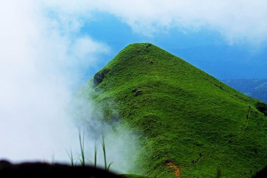
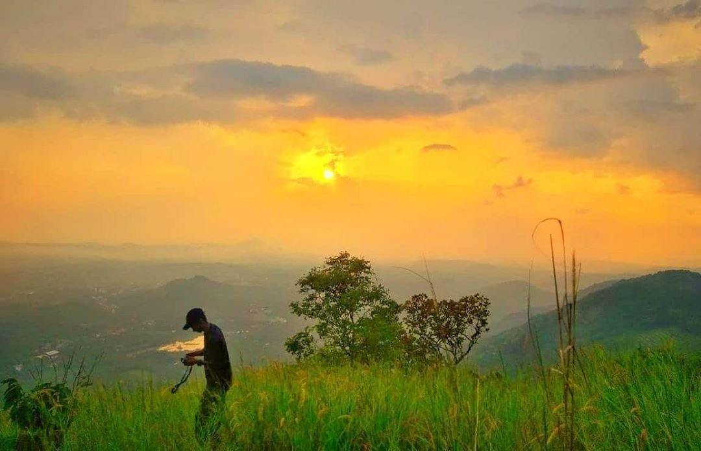

Kasargod

Kasaragod is often described as the land of forts and gods. The place is noted for its ritual dance Theyyam, an art that blends dance, myth, drama, music, art and theatrics. A performing art popular in the northern districts of Kerala, Theyyam can be enjoyed in all its glory at Kasaragod. Kasaragod is almost synonymous with the magnificent key-hole shaped fort, the Bekal Fort which is a historic structure. Other forts include the Chandragiri Fort, Hosdurg Fort, Kumbala Fort, Povval Fort, Kundamkuzhi Fort and Bandadukka Fort.
Top Spots
Bekal Fort
Ranipuram

Valiyaparamba backwaters
Posadi Gumpe


Bekal Fort in Kasaragod holds a unique place in the history of Kerala. The fort, facing the Arabian Sea, was built purely for defence purposes, and is one among the biggest forts in Kerala.
The walls of the Bekal Fort, which is a few centuries old, are made of laterite and are about 12 m in height. The fort has witnessed many fierce battles both human and natural, and its continued existence is a testimony to the engineering brilliance of those times
Near the fort stands an Anjaneya Temple and a mosque that testify the religious harmony that once prevailed in the region.
Ranipuram hills stand at a height of 750 m above sea level, and is the region of highest altitude in the district. Once known as Madathumala, Ranipuram is a paradise for trekkers and Nature lovers who are drawn by the evergreen Shola woods, sprawling meadows and monsoon forests. Wild elephants can also be spotted wandering in the mountains.
To reach Ranipuram, one must take a bus from Kanhangad to Pananthady, and hire a jeep from there.

One of the popular backwater stretches in North Kerala, the Valiyaparamba backwaters are fed by four rivers. The backwaters get their name from the Valiyaparamba Island, a prominent fishing centre that lies 10 km south of Nileshwaram.
A houseboat cruise through the backwaters offers a picturesque view of the surrounding arecanut and coconut palm groves and the rustic charm of the quaint backwaters. Idayilakkadu is a beautiful island on the way, where one can find serpent groves that are home to many troops of monkeys.
Possadi Gumpe is a hillock that stands 1060 ft. high above sea level, situated east of Manjeshwaram and 15 km south of Bekal. The hilltop offers a picturesque view of the Arabian Sea, Mangalore and Kudremukh.
The picture-perfect scenery along the way makes the trek uphill an enriching experience. However, as this less explored hillock is off the beaten track, tourists are advised to go well-equipped with food, water and other trekking necessities. The nearest village from here is Paivalike.